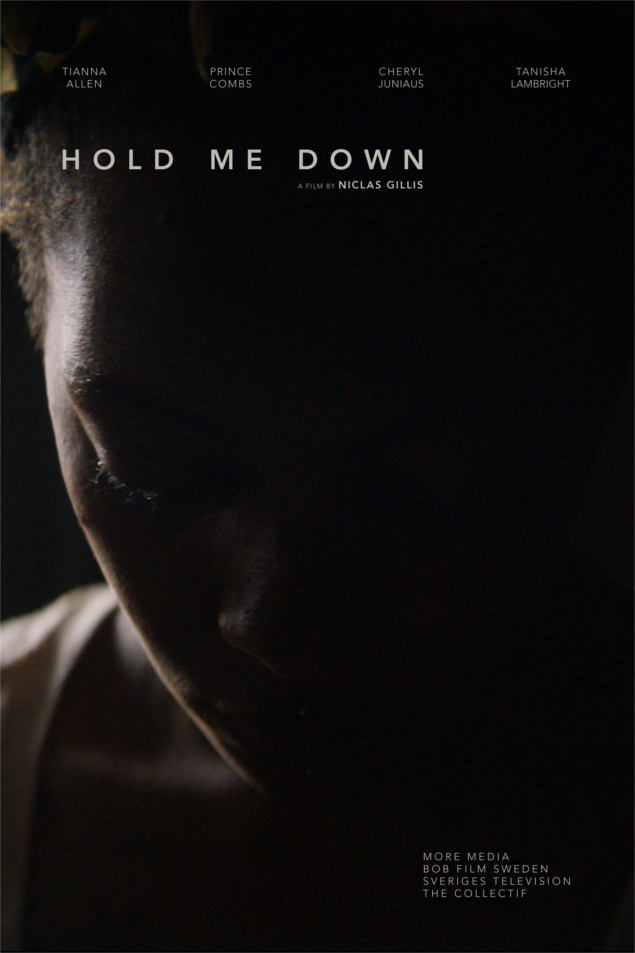

HOLD ME DOWN
Based on true events, Hold Me Down depicts a day in the life of a 19-year-old single mother who works as a stripper at an illegal nightclub to support her child in the South Bronx. It is filmed in the locations where the events depicted actually occurred; in the Mott Haven Housing Projects and in an actual brothel, and features a cast of non-actors / women survivors of sexual exploitation and domestic violence.
Written, directed, and edited by Niclas Gillis, Hold Me Down was produced by Stephen Buchanan at More Media; Anette Brantin at Bob Film Sweden; and Gillis at The Collectif. It was made with support from The Swedish Film Institute, Sveriges Television and IFP. Following its world premiere at the Gothenburg International Film Festival, Hold Me Down has been celebrated for its authoritative realism and the outstanding performances of the cast.
TEASER
“Containing what maybe the most perfect set of performances ever to grace the screen, this film is - on a performance level - unlike anything you've ever seen. The actors are not acting; they are living out their lives, since all of the women are non-actors from the South Bronx. I have never seen performances such as these, and neither have you. They put all of Hollywood to shame.”
-Unseen Films
“All of the women involved in this project gave their souls to it. This is their movie. This is their story.”
-Cultured Vultures
“Hold Me Down is a gritty, brilliantly trail-blazing, and profoundly bold punch to the gut in the form of a short film and an eloquent testament to the cathartic power of cinema as a medium. It is really ESSENTIAL cinema for anyone who cares for their fellow human beings and is motivated to help better their lives and ease their suffering.”
-The 405
“Undoubtedly, Niclas Gillis’ new project makes for a profound and agonizing short that deserves everyone’s attention.”
-View of the Arts
In the video portraits below, members of the cast share their own stories.